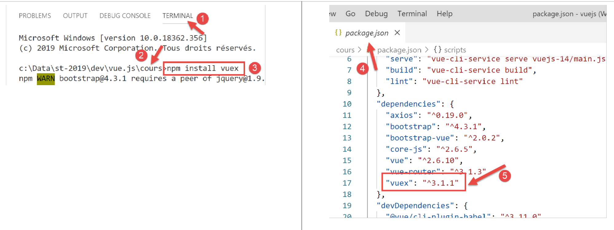

17. Projekt [vuejs-15]: Verwendung des Plugins [Vuex]
Das Projekt [vuejs-15] übernimmt das Projekt [vuejs-14] unter Verwendung eines reaktiven Objekts [session], das von [Vuex] generiert wurde. Die Projektstruktur sieht wie folgt aus:

17.1. Installation der Abhängigkeit [vuex]

17.2. Das Skript [./session.js]
Das Objekt [session] sieht nun wie folgt aus:
// Vuex-Plugin
import Vue from 'vue'
import Vuex from 'vuex'
Vue.use(Vuex);
// Die Sitzung ist ein Vuex-Store
const session = new Vuex.Store({
state: {
// das Array der Simulationen
lignes: []
},
mutations: {
// Erstellung der Liste der Simulationen
generateLignes(state) {
// eslint-disable-next-line no-console
console.log("mutation generateLignes");
// Initialisierung von [state.lignes]
state.lignes =
[
{ id: 3, marié: "oui", enfants: 2, salaire: 35000, impôt: 1200 },
{ id: 5, marié: "non", enfants: 2, salaire: 35000, impôt: 1900 },
{ id: 7, marié: "non", enfants: 0, salaire: 30000, impôt: 2000 }
];
// eslint-disable-next-line no-console
console.log(state.lignes);
},
// Löschen der Zeile mit der Indexnummer
deleteLigne(state, index) {
// eslint-disable-next-line no-console
console.log("mutation deleteLigne");
// Zeile Nr. wird gelöscht [index]
state.lignes.splice(index, 1);
}
}
});
// Export des Objekts [session]
export default session;
Anmerkungen
- Zeilen 2–4: Das Plugin [Vuex] wird in das Framework [Vue] integriert;
- Zeile 7: Die Sitzung wird zu einem Objekt vom Typ [Vuex.Store];
- Zeilen 8–11: Die Eigenschaft [state] enthält den gemeinsamen Status der Anwendung [Vue]. Auf diese Eigenschaft können alle Komponenten der Anwendung zugreifen. Hier geben wir das Simulationsarray [lignes] frei (Zeile 10);
- Zeilen 12–35: Die Eigenschaft [mutations] fasst die Methoden zusammen, die den Inhalt des Objekts [state] ändern;
- Zeilen 14–26: Die Eigenschaft [generateLignes] ist eine Funktion, die einen Anfangswert für die Eigenschaft [state.lignes] generiert. Sie nimmt hier [state] als Parameter entgegen. Zeilen 18–23: Die Eigenschaft [state.lignes] wird initialisiert;
- Zeilen 28–35: Die Eigenschaft [deleteLigne] ist eine Funktion, die eine Zeile aus dem Array [state.lignes] entfernt. Sie hat folgende Parameter:
- [state], das das Objekt aus den Zeilen 8–11 darstellt;
- [index], die Nummer der zu löschenden Zeile;
- Die Funktionen der Eigenschaft [mutations] nehmen als ersten Parameter immer ein Objekt entgegen, das die Eigenschaft [state] der Zeile 8 repräsentiert. Die folgenden Parameter werden vom Code bereitgestellt, der die Mutation aufruft;
- Zeile 37: Das Objekt [session] wird exportiert.
Im Gegensatz zum vorherigen Projekt [vuejs-13] gibt es hier kein Plugin, um die Sitzung für die Komponenten in einem Attribut [Vue.$session] zugänglich zu machen.
17.3. Das Hauptskript [./main.js]
Das Hauptskript entwickelt sich wie folgt:
// Importe
import Vue from 'vue'
import App from './App.vue'
// Plugins
import BootstrapVue from 'bootstrap-vue'
Vue.use(BootstrapVue);
// Bootstrap
import 'bootstrap/dist/css/bootstrap.css'
import 'bootstrap-vue/dist/bootstrap-vue.css'
// Sitzung
import session from './session';
// Konfiguration
Vue.config.productionTip = false
// Projektinstanziierung [App]
new Vue({
name: "app",
// Verwendung des Vuex-Stores
store: session,
render: h => h(App),
}).$mount('#App')
Kommentare
- Zeile 14: Die Sitzung wird importiert;
- Zeile 23: Sie wird in einem Attribut namens [store] an die Hauptansicht übergeben (dies ist vorgeschrieben). Dank des Plugins [Vuex] steht dieses Attribut dann allen Komponenten in einem Attribut namens [Vue.$store] zur Verfügung. Wir befinden uns also in einer Konfiguration, die der des vorherigen Projekts sehr ähnlich ist: Wo man in einer Komponente zuvor über die Notation [this.$session] auf die Sitzung zugegriffen hat, erfolgt der Zugriff nun über die Notation [this.$store];
17.4. Die Hauptansicht [App]
Die Hauptansicht [App] ändert sich wie folgt:
<template>
<div class="container">
<b-card>
<!-- Meldung -->
<b-alert show variant="success" align="center">
<h4>[vuejs-14] : utilisation du plugin [Vuex]</h4>
</b-alert>
<!-- Tabelle HTML -->
<Table />
</b-card>
</div>
</template>
<script>
import Table from "./components/Table";
export default {
// Name
name: "app",
// Komponenten
components: {
Table
},
// Lebenszyklus
created() {
// Erstellung der Simulationstabelle
this.$store.commit("generateLignes");
}
};
</script>
Anmerkungen
- Zeile 9: Die Ansicht [App] nutzt die Komponente [Table], erhält jedoch keine Ereignisse mehr von ihr, da der Store [Vuex] reaktiv ist;
- Zeilen 24–27: Die Methode [created] wird unmittelbar nach der Erstellung der Komponente [App] ausgeführt. In dieser wird die Mutation mit dem Namen [generateLignes] ausgeführt, die einen Anfangswert für das Simulationsarray generiert. Zu beachten ist die besondere Syntax der Anweisung. Zur Erinnerung: Die Notation [this.$store] bezieht sich auf die Eigenschaft [store] der in [main.js] instanziierten Ansicht:
// Instanzierung der Ansicht [App]
new Vue({
name: "app",
// Verwendung des Vuex-Stores
store: session,
render: h => h(App),
}).$mount('#App')
Die Notation [this.$store] bezeichnet also das Objekt [session]. Anschließend schreibt man [this.$store.commit("generateLignes")], um die Mutation mit dem Namen [generateLignes] auszuführen. Diese Mutation ist eine Funktion;
17.5. Die Komponente [Table]
Die Komponente [Table] entwickelt sich wie folgt:
<template>
<div>
<!-- leere Liste -->
<template v-if="lignes.length==0">
<b-alert show variant="warning">
<h4>Votre liste de simulations est vide</h4>
</b-alert>
<!-- Schaltfläche zum Neuladen-->
<b-button variant="primary" @click="rechargerListe">Recharger la liste</b-button>
</template>
<!-- Liste nicht leer-->
<template v-if="lignes.length!=0">
<b-alert show variant="primary" v-if="lignes.length==0">
<h4>Liste de vos simulations</h4>
</b-alert>
<!-- Simulationstabelle -->
<b-table striped hover responsive :items="lignes" :fields="fields">
<template v-slot:cell(action)="row">
<b-button variant="link" @click="supprimerLigne(row.index)">Supprimer</b-button>
</template>
</b-table>
</template>
</div>
</template>
<script>
export default {
// berechneter Status
computed: {
lignes() {
return this.$store.state.lignes;
}
},
// interner Status
data() {
return {
fields: [
{ label: "#", key: "id" },
{ label: "Marié", key: "marié" },
{ label: "Nombre d'enfants", key: "enfants" },
{ label: "Salaire", key: "salaire" },
{ label: "Impôt", key: "impôt" },
{ label: "", key: "action" }
]
};
},
// Methoden
methods: {
supprimerLigne(index) {
// eslint-disable-next-line
console.log("Table supprimerLigne", index);
// Die Zeile wird entfernt
this.$store.commit("deleteLigne", index);
},
// Neuladen der angezeigten Liste
rechargerListe() {
// eslint-disable-next-line
console.log("Table rechargerListe");
// Die Liste der Simulationen wird neu generiert
this.$store.commit("generateLignes");
}
}
};
</script>
Anmerkungen
- [template] in den Zeilen 1–24 bleibt unverändert;
- Zeilen 30–32: Die berechnete Eigenschaft [lignes] verwendet nun [store] aus [Vuex];
- Zeilen 49–54: Um eine Zeile aus der Tabelle HTML zu löschen, wird die Mutation [deleteLigne] von [store] aus [Vuex] verwendet. Als Parameter wird die Nummer [index] der zu löschenden Zeile (Zeile 53) übergeben;
- Zeilen 56–61: Um die Tabelle HTML mit einer neuen Liste neu zu laden, wird die Mutation [generateLignes] von [store] aus [Vuex] verwendet;
17.6. Conclusion
Die Attribute [Vue.$session] des Projekts [vuejs-13] und [Vue.$store] des Projekts [vuejs-15] sind einander sehr ähnlich. Sie verfolgen dasselbe Ziel: den Informationsaustausch zwischen Ansichten. Der Vorteil des Objekts [store] besteht darin, dass es reaktiv ist, während das Objekt [session] dies nicht ist. Das Projekt [vuejs-14] hat jedoch gezeigt, dass es einfach ist, das Objekt [session] reaktiv zu machen, indem man es in den reaktiven Eigenschaften der Ansichten dupliziert.